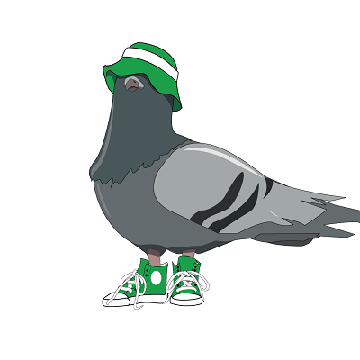

Красная смородина
Чырвоная парэчка
Чырвоная парэчка
Друже, представляю тебе очень лютый софт для рубки тяжелого метала.
Его можно испольовать как в качестве реампинга для сырых гитарных треков, так и для того чтобы просто поиграть.
Все это поставляется в формате VST3/Standalone (windows)
А еще это бесплатно!
ВНИМАНИЕ!!!
В программе использованы бесплатные импульсы кабинетов взятые в интернете.
Подробное описание каждого кабинета и ссылки на первоистоки сих файлов можно отыскать в разделе ссылки
Его можно испольовать как в качестве реампинга для сырых гитарных треков, так и для того чтобы просто поиграть.
Все это поставляется в формате VST3/Standalone (windows)
А еще это бесплатно!
ВНИМАНИЕ!!!
В программе использованы бесплатные импульсы кабинетов взятые в интернете.
Подробное описание каждого кабинета и ссылки на первоистоки сих файлов можно отыскать в разделе ссылки
Сябра, прэзентую цябе вельмi злосны софт для рубкi цяжкага металу.
Яго можна выкаросто¿ваць для рэампiнга сырых гiтарных трэка¿, цi для таго, каб проста пайграць.
Усе гэта можна спампаваць у фармаце VST3/Standalone (windows)
А яшчэ гэта ¿се задарма!
Увага!!!
У праграме выкарысто¿ваюцца дармавыя iмпульсы з iнтернету.
Падрабязнае апiсанне кожнага кабiнету ды спасылкi на першавытокi файла¿ можна знайсцi на страноке спасылкыi
Яго можна выкаросто¿ваць для рэампiнга сырых гiтарных трэка¿, цi для таго, каб проста пайграць.
Усе гэта можна спампаваць у фармаце VST3/Standalone (windows)
А яшчэ гэта ¿се задарма!
Увага!!!
У праграме выкарысто¿ваюцца дармавыя iмпульсы з iнтернету.
Падрабязнае апiсанне кожнага кабiнету ды спасылкi на першавытокi файла¿ можна знайсцi на страноке спасылкыi
I want to present you a fury software for metal! It is a guitar amp emulator with some features.
You can use it for reamping your raw guitar tracks or just to play in realtime.
You can download it in form of VST3 plug-in/Standalone app (windows)
And it is absolutely FREE!!!
ATTENTION!
This program uses free IR files downloaded from the Internet.
Detailed description and links to file's sources can be found at : Links
You can use it for reamping your raw guitar tracks or just to play in realtime.
You can download it in form of VST3 plug-in/Standalone app (windows)
And it is absolutely FREE!!!
ATTENTION!
This program uses free IR files downloaded from the Internet.
Detailed description and links to file's sources can be found at : Links
Что есть в программе?
Што ёсць у праграме?
In Чырвоная Парэчка you can find :
- очень лютый усилитель
- эмулятор кабинета, с возможностью загрузки своих импульсов
- грелка
- эффект реверберации
- эффект дилея
- нойзгейт
- красивый дизайн с богатырями и нечистью ведических времен
Ну что, друже, ты заинтересовался? Коли так, то нажимай на кнопку, дабы попасть на страницу загрузок
СКАЧАТЬ
- эмулятор кабинета, с возможностью загрузки своих импульсов
- грелка
- эффект реверберации
- эффект дилея
- нойзгейт
- красивый дизайн с богатырями и нечистью ведических времен
Ну что, друже, ты заинтересовался? Коли так, то нажимай на кнопку, дабы попасть на страницу загрузок
- вельмi люты узмацняльнiк
- эмулятар дынамiка, з магчыымасцю загрузкi сваiх iмпульса¿
- грэлка
- эфект рэвэрбэрацыi
- эфект дылэя
- нойзгэйт
- прыгожы дызайн з волатамi ды нечысцю ведычных часо¿
Ну что, сябра, ты зацiка¿лен? Калi так, нацiскай на кнопку, каб трапiць на старонку спамповак
- эмулятар дынамiка, з магчыымасцю загрузкi сваiх iмпульса¿
- грэлка
- эфект рэвэрбэрацыi
- эфект дылэя
- нойзгэйт
- прыгожы дызайн з волатамi ды нечысцю ведычных часо¿
Ну что, сябра, ты зацiка¿лен? Калi так, нацiскай на кнопку, каб трапiць на старонку спамповак
СКАЧАТЬ
СПАМПАВАЦЬ
- fury guitar amp
- cabinet emulator (with custom IR loader)
- screamer
- reverb effect
- delay effect
- noisegate
- nice interface with slavic warriors and monsters
Ну что, сябра, ты зацiка¿лен? Калi так, нацiскай на кнопку, каб трапiць на старонку спамповак
- cabinet emulator (with custom IR loader)
- screamer
- reverb effect
- delay effect
- noisegate
- nice interface with slavic warriors and monsters
Ну что, сябра, ты зацiка¿лен? Калi так, нацiскай на кнопку, каб трапiць на старонку спамповак
СКАЧАТЬ
СПАМПАВАЦЬ
DOWNLOAD
Загрузки
Спампаваць
Download
Контакты
Сувязь
Contacts
Коли вам надобно что-то написать мне.
Калi вам патрэбна нешта напiсаць мне.
If you need to mail me.
VK
vk.com/ded_leshak
Почта
Пошта
Email

cornfloweraudio@yandex.ru
Telegram
@chinSu_fxz
Ссылки
Спасылкi
Links
В программе использованы импульсы из интерента. Здесь вы можете отыскать их истоки:
У праграме выкарыстаны iмпульсы з iнтернету. Тут вы можаце знайсцi iх вытокi:
This programme uses some free IR files from Internet. You can find their sourses here:
www.grgr.de/IR/
Чернобогъ - Hiwatt oiro \ Hiwatt mtg-N2 oiro.wav
Навь - Vintage Marshall setup \ marshall-2_impact.wav
Злостная нечисть - Rectifier setup \ rectifier AT4033_impact.wav
Болотный черт - Rectifier setup \ rectifier sm57_impact.wav
GuitarHack IR from some site
Вий - JJ Powertube Impulses \ GuitarHack JJ CENTRE 0.wav
Бес - JJ Powertube Impulses \ GuitarHack JJ FRED45-HALF.wav
Мара - Original 3 Impulses \ GuitarHack Original Centre.wav
Лихо одноглазое - Original 3 Impulses \ GuitarHack Original Edge.wav
God's Cab by wilkinsonaudio.com
Горыныч - 57_1_inch_cap_pres_2.wav
Леший - 57_2_inch_cap_pres_5.wav
Вселенская тьма - 57_TS_grill_cap_pres_5.wav
Без названия - 57_TS_grill_cone_far_pres_4.wav